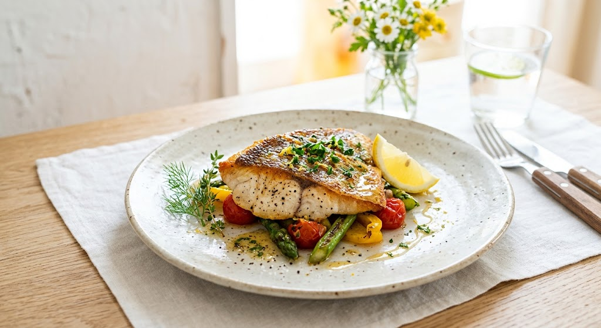

New Menu
Seasonal Special
季節限定「自家栽培の採れたて旬野菜」の手打ちパスタ
実家の畑でその日の朝に収穫されたばかりの最高の野菜をふんだんに散りばめた、四季折々の限定手打ちパスタメニューが始まります。モチモチの手打ち生地と、一番美味しい瞬間の野菜が奏でる特別なハーモニーをお楽しみください。
提供予定：順次リリース
公式Webサイトにて案内
岩手・北上の静寂に佇む、
大人の隠れ家「ロルト」
岩手県北上市の喧騒を離れ、
住宅街の奥にひっそりと暖簾を掲げるイタリアン「L’ORTO」。
農家の娘として生まれた女性シェフが、
その日の朝に収穫されたばかりの瑞々しい「自家栽培野菜」を中心に、
一皿一皿に物語を込めて腕を振るいます。
ご来店の際は事前のご予約がスムーズです。旬の食材をご用意してお待ちしております。
お電話で予約する（0197-62-8001）
当店の看板メニュー「鯛のソテー」。表面は香ばしく焼き上げ、中は驚くほどふっくらと。シェフの実家で採れた濃厚な野菜のピューレをソースに使い、素材が持つ「力強さ」を最大限に引き出しました。
都内の名店で修行した十年間、常に頭にあったのは、岩手の実家の畑で食べたあの日の野菜の味でした。
2023年7月、私は北上の地に小さなレストランを開きました。名前は「L’ORTO（ロルト）」。イタリア語で「野菜園」という意味です。
形は不揃いでも、滋味深い。そんな野菜たちの声に耳を傾けながら、今日も厨房に立ちます。
オーナーシェフ 後藤

繁華街から離れた立地。個室（5〜10名）も完備しており、記念日や家族の集いにも最適です。
素材選びに妥協はありません。自家栽培野菜、手打ちパスタ、そして厳選された魚介。
「パスタの茹で加減が絶妙でした。前菜からデザートまで、野菜の甘みに驚きっぱなし。北上に来たら必ず寄りたい店です。」
「女性シェフの繊細な盛り付けに感動。鯛のソテーのソースが絶品で、パンでお皿を拭って食べたほどです。」
「カジュアルなのに、味は本物。一人でも気兼ねなく入れる雰囲気が嬉しいですね。次はディナーにお邪魔します。」
ロルトでは、お客様と食や畑との繋がりを深める特別な企画を準備中です。
実家の畑でその日の朝に収穫されたばかりの最高の野菜をふんだんに散りばめた、四季折々の限定手打ちパスタメニューが始まります。モチモチの手打ち生地と、一番美味しい瞬間の野菜が奏でる特別なハーモニーをお楽しみください。
都内で実績を積んだシェフと一緒に粉から生地を仕込み、自家製パスタを作る特別な体験教室を開催。自分で作ったパスタと朝採り野菜で作るスペシャルランチ付き。少人数制で丁寧にレクチャーいたします。
※新メニューの開始日やワークショップの募集開始時期は、店頭および公式Webサイトにて順次お知らせいたします。
お席に限りがございます。お早めのご予約をお勧めいたします。
※TEL：0197-62-8001（営業時間中にお気軽にお問い合わせください）